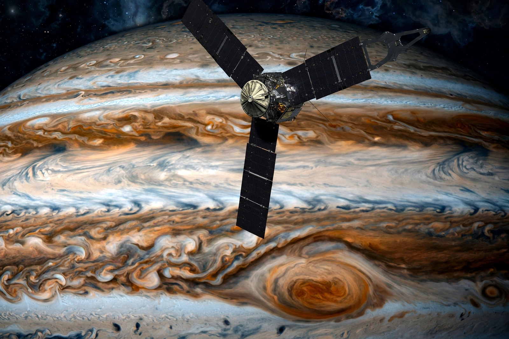

NASA Science · Missions
| Juno | |
|---|---|
| Operator | NASA (JPL) |
| Launch | 5 August 2011 |
| Jupiter arrival | 4 July 2016 |
| Power | Solar (three large arrays) |

Juno is a NASA space probe orbiting Jupiter, launched in 2011 and arriving in 2016, named for the Roman goddess who could see through clouds — fitting for a mission peering beneath Jupiter's cloud tops to measure its gravity, magnetic field, composition and deep atmosphere.
In a highly elliptical polar orbit that dives close to the poles, Juno found Jupiter's auroras, cyclonic polar storms, a diffuse 'fuzzy' core, and deep zonal winds; its microwave radiometer probed water abundance. Originally planned to end in 2018, the mission was repeatedly extended into the 2020s, including close flybys of Ganymede, Europa and Io.